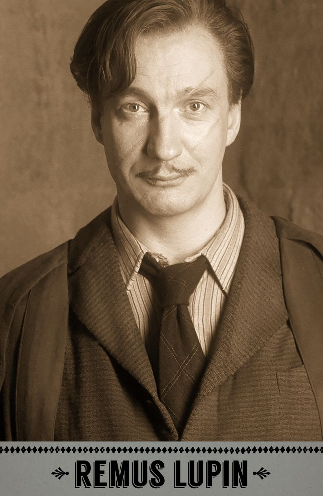
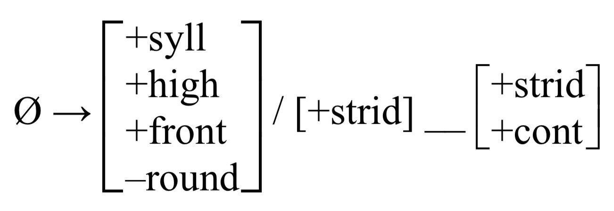

Temporary office hours Tuesday 29th 12:30-1:30
Every sound comes to the surface as an allophone
You never produce a phoneme, just the surface allophone which has the same form as the underlying phoneme.
“These two sounds are phonemes” is not the most accurate phrasing
It’s a nitpick, but it’s a nit I should be better at picking.
This is Will’s very favorite typo
Allophones form a complementary set, which completely cover the options
Allophones do not tell you that your hair looks great today
Writing phonological rules
Writing graceful phonological rules
| # Phonological Rules |
They’re in a complementary distribution
You can predict which one will show up based on the environment
How do I express that prediction to somebody else?
You describe the distribution of the allophones of a phoneme with phonological rules
We’re going to differentiate words in IPA between // and []
/tap/ means ‘top’ at an abstract level (‘Underlying form’).
[tap] means that sequence of sounds at a surface level (‘Surface form’).
/tap/ exists in the speaker’s mind, [tap] exits a person’s mouth
More later…
We need to know what it starts as
What it turns into
And when that transformation takes place
/Starting State/ -> [Ending State] / [When the transformation happens]

What it starts out as
What it ends up as
What conditions or environment triggers it
“X turns into Y in environment Z”
“X -> Y” means “X turns into Y”
Then the “/” which means “in the environment”
Then you add a blank, representing where the sound goes that’s getting transformed “__”
… And you position that blank relative to the conditioning environment.
Once we’ve learned features, we’re going to have you use them
I’ll present both
/n/ -> [ŋ] / __ [dorsal C]
If it happened after dorsal sounds…
/n/ -> [ŋ] / [dorsal C] __
Bruce Wayne –> Batman / [Crime]__[Crime]
/t/ -> /t̪/ /__[dental C]
/ej/ -> [ej:] / __[+voice]
/V/ -> [Ṽ] / __[+nasal]
“#” indicates a word boundary
Words actually look like [#kʰæt#ʃoʊ#]
The environment “__#” means “at the end of the word”
The environment “#__” means “at the start of the word”
Same thing goes for syllable (“.”) and morpheme (“+”) boundaries
“V” means “any vowel”
“C” means “any consonant”
“ø” means “Nothing”
α β γ are used for matching
“ø” means “Nothing”
/t/ -> ø / __#
ø -> [t] / V__V
“These sounds should match for this feature”
/n/ -> [ŋ] / __[Velar C]
/n/ -> [n̪] / __[Dental C]
/n/ -> [m] / __[Bilabial C]
/n/ -> [n] / __[Alveolar C]
/n/ -> [αplace] / __[C αplace]
You can use α β γ (and so forth) for any features
If you just need one, use [α] (Greek letter alpha)
If you need to match on two independent features, use [β]
“Given two vowels of the same height, the second vowel is rounded if and only if the first vowel is rounded.”
Groups of sounds can be presented as ordered sets
/p t k/ -> [ɸ θ x] / V__#
Sometimes, you need to list multiple features
One approach: 
The other: ø -> [+syll,+high,+front,-round] / [+strid]__[+strid,+cont]
These two rules say the same thing. They are equivalent.
I’ll post a fancy bracketing in word guide on Canvas
V -> [+nasal] / [Nasal C]__
V -> [+nasal] / NasalC__
/d/ -> [z] / __(C)#
V -> [αround] / +syll, αround__
V -> [αround] / +syll, αround__
(Assume that groupings represent complete natural classes)
1: /d/ becomes a /n/ immediately after a nasal vowel
2: /i/ and /u/ become /ɪ/ and /ʊ/ at the end of the word, even if there’s a nasal before the word’s end.
3: /d/ will turn into /b/ or /d/ or /g/ when after /m/ or /n/ or /ŋ/, respectively
4: A glottal stop is inserted between any two vowels with matching rounding
5: All consonants except /m/ or /n/ or /ŋ/ are deleted word finally
6: /p/ turns into /b/ at the start of a monosyllabic CV word, with any vowel
/i u/ -> [ɪ ʊ] / __([C +nasal])#
[+syll, +high, +ATR] -> [-ATR] / __([-syll, +nas])#
“How is this word ‘stored’?”
“What elements of this word can I not predict?”
“What don’t I want to deal with in this analysis?”
The surface forms contain the final form of the word
The underlying forms contain only the unpredictable information
The underlying forms must contain the information which your rules cannot predict
‘Dot’ /dat/ -> [dat]
‘Eat’ /it/ -> [it]
No rules apply!
‘Dog’ /dag/ -> [da:g]
‘Cat’ /kæt/ -> [kʰæt]
We don’t need to store the predictable stuff
‘Planes’ /plejn+z/ -> [pʰl̥ẽj̃nz]
… but the underlying form remains pretty plain

[l] and [r] alternate, and are about equally common
[l] occurs before /ɛ ɡ n ɱ œ ʠ h w x ʤ ᴢ β æ m/
[r] occurs before /i/
/l/ -> [r] / __i
/r/ -> [l] / [loud sobbing]
/s/ -> [z] / At the end of the words dog, pub, rag, dad, bin…
/s/ -> [s] / At the end of the words cat, buck, cliff, myth…
/s/ -> [ɪz] / At the end of words dish, fish, kiss, plus, judge…
/s/ -> [z] / [j,g, d, ɹ, n, w, b, m, l, i, aj, v, u, oʊ…]__
/s/ -> [s] / [t, p, k, f, θ…]__
/s/ -> [ɪz] / [tʃ, dʒ, s, ʃ, z]__
/s/ -> [z] / [C +voice]__
/s/ -> [ɪz] / [strident C]__
/s/ -> [s] / Elsewhere
There’s a better approach, we’ll cover it later
An elegant solution will have a good balance of fit, complexity, and generality
Fit: How well does the analysis fit the data?
Generality: How much of the available data does it describe? Does it capture general patterns?
Complexity: Is there a way to handle the data which is less complex than the one you’re proposing?
Redundancy: Does it provide unnecessary information, or redundantly specify features?
An analysis which doesn’t fit the data isn’t a good analysis
Always make sure there are no datapoints which break your analysis
This needs to come first
If you can explain every form but one, you’re not done
You don’t want to write five rules for five processes when you can write one
Combine rules where you can
This hardens your analysis against wugs and loanwords
Most phonological rules deal in features or natural classes
If you’re writing three rules for three similar processes, ask yourself questions
An analysis should be as simple as possible
Given two analyses which are functionally equivalent, the smaller one is better
Some analyses are complex, but always ask yourself if you can do the job with fewer moving parts
You do not need to tell us that these sonorants are voiced
You do not need to say that alveolar sounds are coronal
If one more person tells me about a stop consonant, I’m going to cry
It won’t be a huge part of your grade
An inelegant solution is better than none at all
We understand that you’re still learning
… but do your best to make your analysis elegant
Treat the rule as a hypothesis, then look for the data that doesn’t follow it
If it breaks down, tweak or abandon
For LIGN 111, if your rule doesn’t work with one of the words in the dataset, your rule doesn’t work
Learn phonological rule notation
Choose your URs carefully and strategically
Write elegant rules, please!